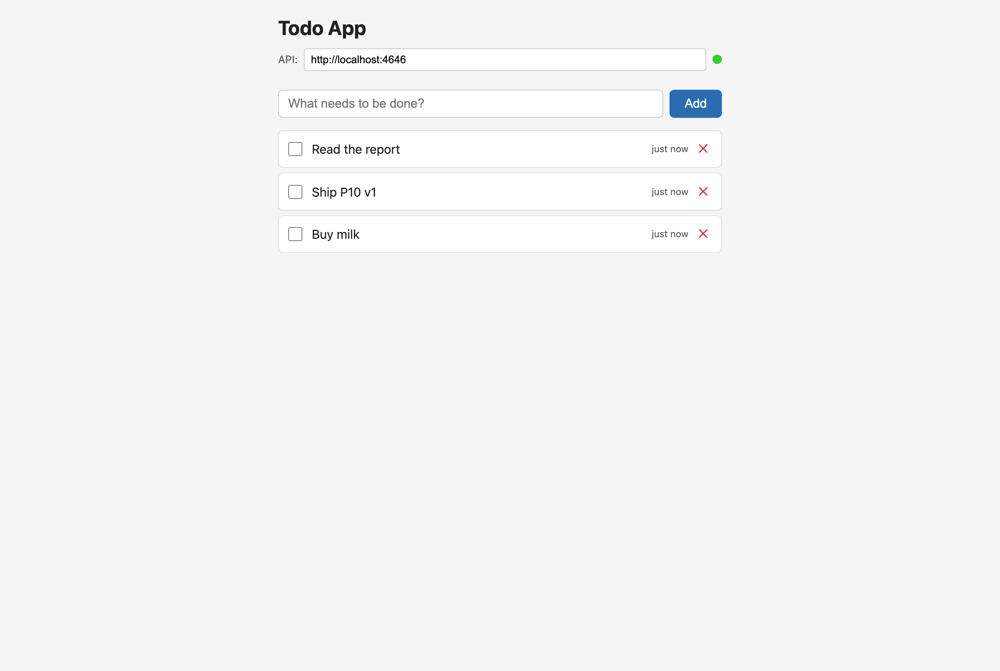
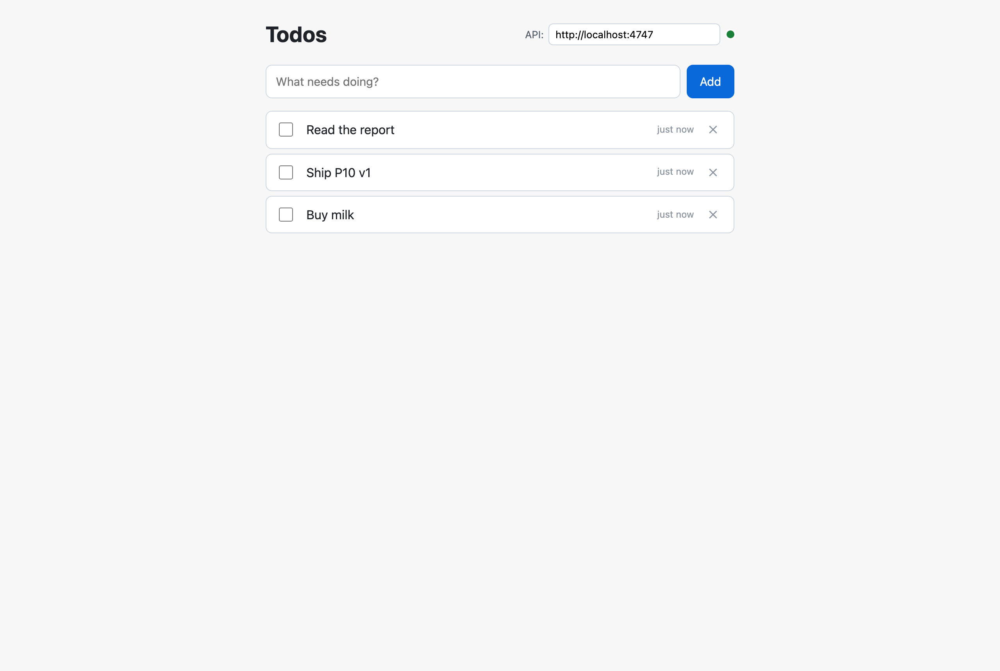
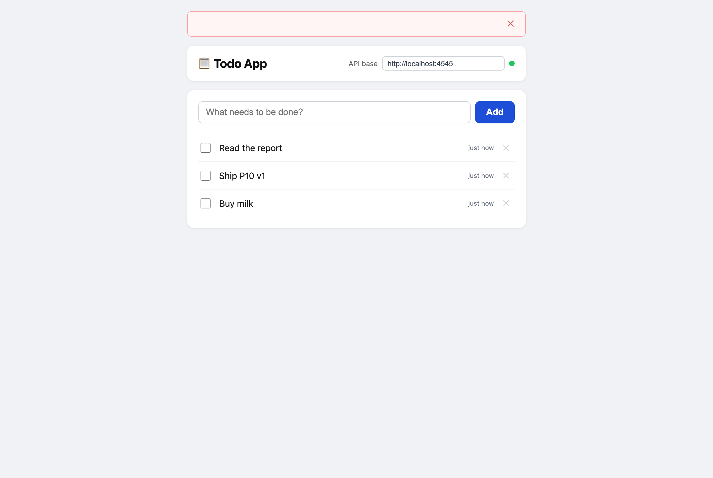
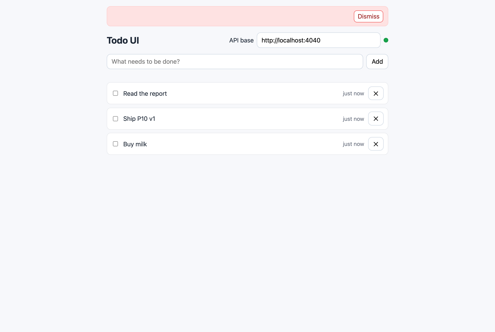
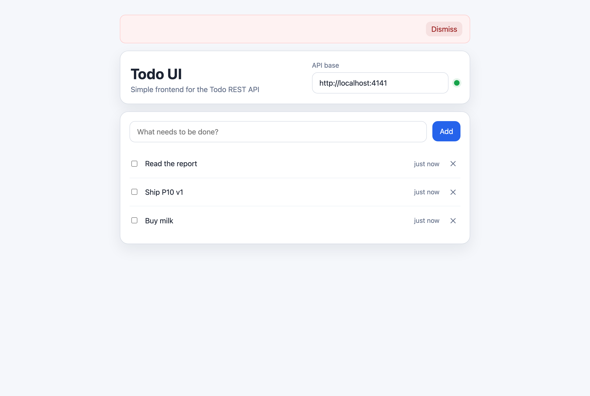

Claude Opus 4.6
anthropic/claude-opus-4-6
- Build
- 190 s · $0.518
- E2E
- 12 / 12 ✅
- Axe (first pass)
- 1 serious contrast
- Design rubric
- 3.43 / 5
- Fix pass
- 17 s · $0.094
Benchmark · 2026-04-16
Same prompt, same tools, same sandbox — Opus 4.6, Opus 4.7, Sonnet 4.6, GPT-5.3-codex, and GPT-5.4 each produced a Todo REST API + a vanilla-JS UI, then passed through black-box E2E tests, objective axe-core a11y checks, a neutral-judge design rubric, and a self-fix pass. Every number here is measured; every artifact is in the repo.
All five models shipped a Todo app that passes 12/12 E2E tests. The interesting differences are where you'd expect them: latency, cost, default accessibility, and design polish.
150 s total for API + UI build.
Only model to ship with 0 axe violations.
3.76 / 5 average across 21 rubric dimensions.
$0.037 to fix its own axe violation.
39-line HTML; 6.6 KB total HTML + CSS.
Caveat up front: n=1 per model and the design judge is gpt-5.4, which happens to also be a contestant. Take ratings as directional, not canonical. Full caveats at the bottom.
Each UI is a vanilla HTML + CSS + JS app produced by a different model from the same prompt. The prompt includes a testability contract (data-testid, aria-label, fixed text strings) so one Playwright suite exercises all five.





A reproducible harness, one prompt per artifact, one model variable, everything else fixed:
data-testid contract. Prompt.gpt-5.4 judges each build against 21 dimensions (Nielsen 10 + Gestalt 3 + hierarchy + typography + 3 states + 3 visual a11y). Rubric.axe-report.json and is asked to fix the violation minimally without breaking the E2E contract. Fix prompt.Each model ran via pi in JSON mode with --no-context-files --no-extensions --no-skills --no-prompt-templates and a fresh working directory. No AGENTS.md nudging anyone.
A note on the CORS hole. E2E immediately exposed that none of the API builds set CORS headers — the spec didn't demand it. All five models produced the same bug. Rather than pretend each one built a browser-ready API, I applied one shared patch and recorded two verdicts (pre-fix 0/60 and post-fix 60/60). The same E2E harness that catches models also catches your own spec gaps.
Full build (API + UI) per model. Sequential, same machine, same network.
| Model | API (s) | UI (s) | Total (s) | API ($) | UI ($) | Total ($) |
|---|---|---|---|---|---|---|
| opus-4-7 | 55 | 95 | 150 | 0.195 | 0.361 | 0.556 |
| opus-4-6 | 81 | 109 | 190 | 0.212 | 0.306 | 0.518 |
| sonnet-4-6 | 109 | 224 | 333 | 0.159 | 0.436 | 0.595 |
| gpt-5-3-codex | 87 | 346 | 433 | 0.074 | 0.528 | 0.602 |
| gpt-5-4 | 104 | 429 | 533 | 0.081 | 0.518 | 0.599 |
Two stable patterns across both tasks:
The Playwright suite runs 12 behavioural tests against each build. All pass everywhere once CORS is in place.
data-completed and applies strikethroughThis is the most boring-yet-important finding: with a testid contract in the prompt, every contemporary frontier model produces functionally equivalent UIs. The interesting deltas are everywhere except correctness.
Deterministic, no LLM involved. Axe is run with resultTypes: ["violations", "incomplete"] against the populated page.
| Model | Violations | Severity | Offender |
|---|---|---|---|
| gpt-5-3-codex | 0 | — | clean |
| opus-4-7 | 1 | moderate | error banner outside landmark |
| opus-4-6 | 1 | serious | button + timestamp contrast < 4.5:1 |
| sonnet-4-6 | 1 | serious | button + timestamp contrast < 4.5:1 |
| gpt-5-4 | 2 | serious + moderate | accent contrast + landmark |
GPT-5.3-codex is the only model that shipped a zero-violation UI on the first try. It also produced the smallest type-size palette (3 font sizes vs 7–8 for the others) — a small sign that coding-tuned variants default to more restrained design defaults.
21 dimensions, each scored 1–5 by a neutral-ish third-party model (openai/gpt-5.4) with a strict JSON schema.
| Model | Nielsen 10 avg | Gestalt 3 avg | Overall avg |
|---|---|---|---|
| gpt-5-4 | 3.50 | 4.67 | 3.76 |
| gpt-5-3-codex | 3.40 | 4.00 | 3.71 |
| opus-4-7 | 3.40 | 4.33 | 3.67 |
| opus-4-6 | 3.40 | 4.33 | 3.43 |
| sonnet-4-6 | 3.10 | 4.00 | 3.10 |
Shared strengths (every model): aesthetic minimalism (5/5 across the board), clean alignment, plain language, readable hierarchy.
Shared weaknesses (every model): loading indicators (2/5), power-user features / keyboard shortcuts (2/5), error prevention beyond the required empty-title case (2/5). These are prompt gaps, not model failures — nobody demanded them.
gpt-5.4, which is also a contestant. It scored itself highest. A fairer rerun would use a panel (e.g. Opus + GPT + Gemini) or a human-rated sample. Treat these numbers as directional.
Same fix prompt: "read axe-report.json, fix the violation minimally, don't break the E2E contract". The model only sees its own violation. All four fixes kept all 12 E2E tests green and reached 0 axe violations.
| Model | Time | Turns | Cost | Files | Diff |
|---|---|---|---|---|---|
| opus-4-6 | 17 s | 5 | $0.094 | styles.css | 2 color values |
| opus-4-7 | 19 s | 5 | $0.063 | index.html | added role="alert" |
| sonnet-4-6 | 20 s | 6 | $0.037 | styles.css | 3 color values |
| gpt-5-3-codex | — | — | — | — | no violation — skipped |
| gpt-5-4 | 50 s | 7 | $0.060 | index.html + styles.css | landmark + contrast |
4-7's fix is the most elegant — one attribute, one file, solves an entire landmark-region rule. Sonnet-4-6's fix is the cheapest, riding 11.9 k cached input tokens. Opus-4-6's fix is the fastest wall-clock, but paid for 16.5 k uncached input.
data-testid + fixed text to the prompt. One E2E suite then audits every model identically.Everything — prompts, harness scripts, raw JSONL streams, axe reports, design-rubric JSON, screenshots — is in the repo. Running one model end-to-end:
cd agents-test/opus-compare
# API + UI build + CORS patch + screenshots + objective axe
./scripts/run-full.sh openai/gpt-5.4 gpt-5-4 4141 9191
# Functional E2E (add a project entry first)
cd tests && npx playwright test --project=gpt-5-4
# LLM design rubric
node design/judge.mjs gpt-5-4 reports/gpt-5-4 runs/ui-gpt-5-4
# Fix pass
./scripts/run-fix.sh openai/gpt-5.4 runs/ui-gpt-5-4 prompt/fix-axe.prompt.md runs/ui-gpt-5-4/fix-stream.jsonlThe harness is model-agnostic; any <provider>/<model> that works through pi will run.
gpt-5.4 is both contestant and judge. Rerun with Opus or a panel.pi's model registry returns 404 on the OpenAI API. Substituted with gpt-5.3-codex.